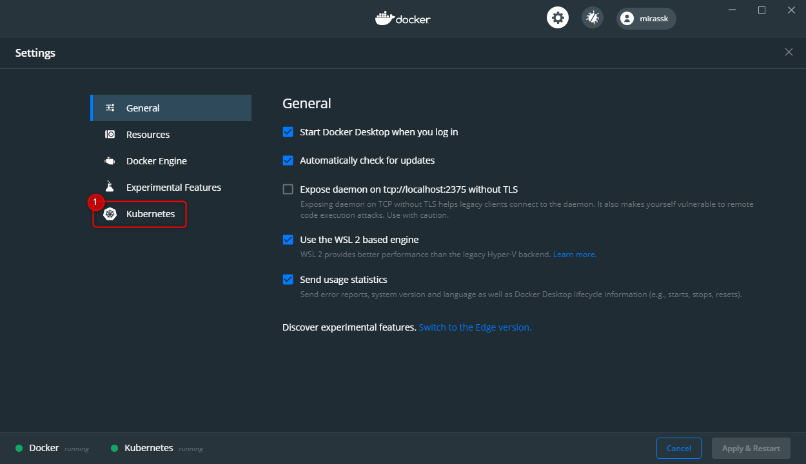
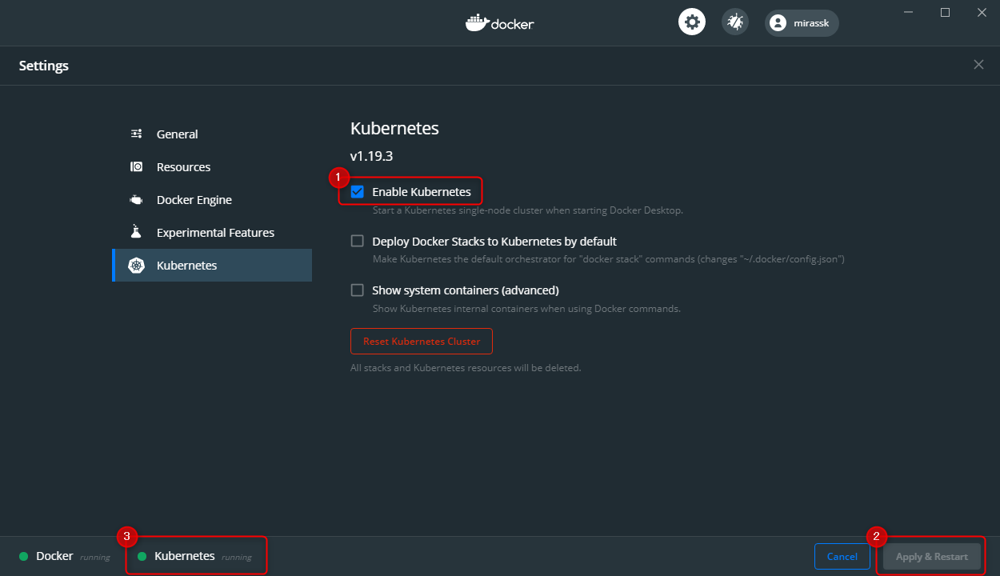

はじめに
1. 自己紹介
1.1. 【miracleave株式会社 佐々木 直人】
マネージャー
中小SI企業にて、製造業や金融系のお客様のシステム開発に関わる。
その後、miracleave株式会社に入社、約5000万人が使うポイントシステムにて、リードエンジニアを担当。
クラウドからアプリまで幅広く担当しながら、自社サービスの企画・開発を行う。
1.2. 【miracleave株式会社 上野 理玖】
エンジニア
調理の専門学校在学中に海外留学。その後日本で日本料理店に就職。
プログラミングへの熱い想いから、退職し、IT学習にのめり込む。
mirameetをきっかけに、miracleave株式会社に入社。
入社後も学習を続け、3週間でAWS認定資格を取得するなど、miracleave期待の新人。
2. 前提
※Windows/MacOSで確認しました。
3. Kubernetes
Docker Desktopには、Kubernetesサーバーとクライアントが内包されています。 Dockerインスタンス内でローカルに実行され、単一ノードクラスターとなっています。
- タスクバーにあるを右クリックして、
Settingsを選択してください。 Macの方：Dashboard,もしくはpreferenceをクリックしてください。 - メニューにある
Kubernetesを選択してください。  Enable Kubernetesをチェックし、Apply&Restartをクリックしてください。
しばらくすると③の箇所にKubernetes Runningと表示します。 
4. Kompose
4.1. Windowsの場合
Windowsでは、Chocolateyでインストールできます。
※Chocolateryをインストールしていない方はこちら
- Power Shellを起動する
- Windowsのスタートボタンを押します。
- メニューにある「Windows PowerShell」を右クリックして、
管理者として実行を選択します。 Power Shellにインストールコマンドを入力し、実行します。
choco install kubernetes-komposechoco list -lを実行して、kubernetes-komposeが表示されるとインストール完了です。PS C:\> choco list -l Chocolatey v0.10.15 chocolatey 0.10.15 kubernetes-kompose 1.22.0 2 packages installed.
4.2. MacOSの場合
MacOSでは、Homebrewでインストールできます。
※Homebrewをインストールしていない方はこちら
- ターミナルを起動する。
ターミナルにインストールコマンドを入力し、実行します。
brew install komposebrew listを実行して、komposeが表示されるとインストール完了です。pc:go-react-todo-master pc$ brew list kompose